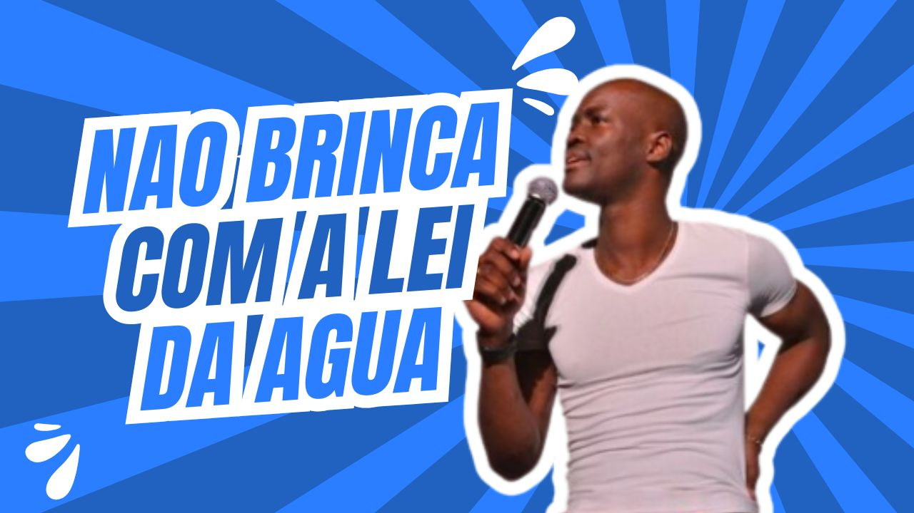
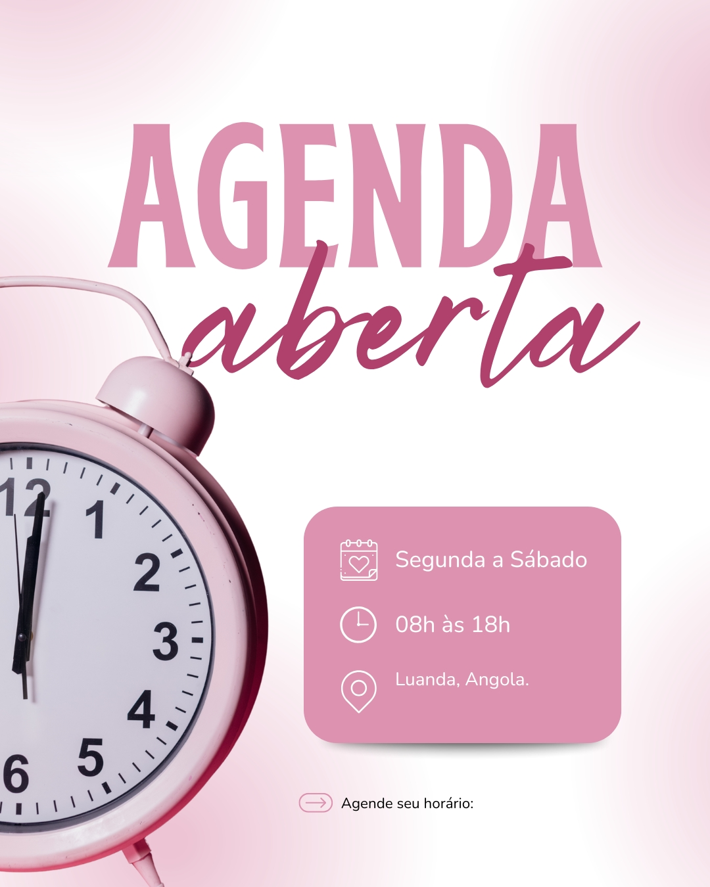

O Som da Rua Vira Notícia.
O epicentro do entretenimento, cultura e mídia digital angolana.
Ver Destaque da SemanaEm Alta

Últimas Notícias de Angola
Agenda de Eventos


O epicentro do entretenimento, cultura e mídia digital angolana.
Ver Destaque da Semana